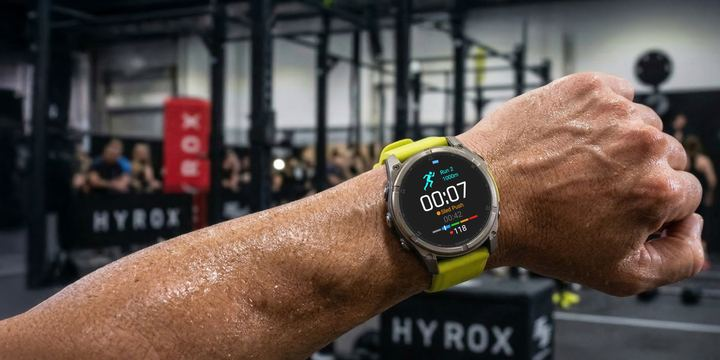
User Guide
ROXZONE has two halves. The watch app records every run, station and transition. roxzone.app, on your phone, is where you build workouts and race plans, and where every result and your profile live. This guide follows that loop: plan on your phone, train on your watch, review on your phone.
Quick start
Plan on your phone, race on your watch
On your phone
- Sign in at roxzone.app with the email you bought ROXZONE with.
- Build a workout in Workouts, or split a goal time across the race in Plan.
- After training, every result waits in Activities.
On your watch
- Open ROXZONE and pick Full Hyrox, a simulation, or one of My Workouts.
- Press SELECT to start, then Lap at every arch.
- At the finish, BACK saves to Garmin Connect.
Chapter 1
Getting Started
Get ROXZONE on your watch and unlock it. It takes a few minutes, once.
Supported Watches
ROXZONE runs on a wide range of Garmin watches that support Connect IQ 3.2 or later, including popular series such as the Forerunner, Fenix, Epix, Venu, and Vivoactive. The full and up-to-date device list lives on the Garmin Connect IQ page.
Screen-size variants are handled automatically - ROXZONE ships optimised layouts for round faces across multiple resolutions so the display always feels sharp and readable mid-effort.
Downloading the App
- Open ROXZONE on the Connect IQ Store, or search for ROXZONE in the Connect IQ Store app on your phone.
- Tap Install.
- Make sure your watch is paired with Garmin Connect on your phone and in Bluetooth range - the app pushes to your watch within a few seconds.
- Once installed, ROXZONE appears in your watch's activity or app menu depending on your device.
First Launch
When you open ROXZONE for the first time it will show the locked screen with your unique claim code. This is expected - ROXZONE requires a one-time purchase to unlock. Your claim code identifies your watch and is needed to complete the purchase.
Head to Purchasing & Unlocking below to complete your purchase and activate the app. Once unlocked, the claim code screen disappears and you're taken straight to the Mode Select screen on every subsequent launch.
Your Claim Code
When you first open ROXZONE, the screen displays your unique claim code - RZ- followed by a number, like RZ-12345678 or RZ-4839 2017 5264 depending on your app version. The code is specific to your watch and is required to link your purchase to your device. You can type it with or without the spaces.
Your claim code is always on the watch: the locked screen shows it, and so does Manual Unlock in the in-app menu. A restore uses whatever code the watch is showing at that moment, paired with the email you bought with.
Purchasing & Unlocking
- Open ROXZONE on your watch and note your claim code.
- Visit the Store page on this site. The Purchase/Unlock tab will be pre-selected.
- Enter your claim code in the Watch claim code field.
- Enter the email address you want the license registered to - use one you can access long-term, as it's needed for future restores.
- Complete payment. The page shows the one button for your region: in India that is Pay with Razorpay (UPI, cards and netbanking), and everywhere else Card or Wallet, which also offers WeChat Pay on the checkout page.
- After a successful payment you'll land on the confirmation page. Your license is now live.
- Open ROXZONE on your watch with your phone nearby. It unlocks itself within a few seconds - there's nothing to tap.
If you open the Store page directly from the QR code or link on your watch, your claim code is filled in automatically - you just add your email and pay.
Manual Unlock
If the automatic deep-link doesn't work on your device, you can always do it manually. On the locked screen, scroll down and tap Manual Unlock. This shows your claim code in a format you can type into the Store page on any browser.
Part 1
Plan on your phone
The best of ROXZONE is built on your phone: workouts with any station, value or rest, and a race plan for your goal time. The watch picks both up from there.
Chapter 2
ROXZONE on Your Phone
The watch records. roxzone.app, in your phone's browser, is where you plan and review: build workouts, split a goal time into a race plan, see every result and keep a profile.
Signing In
Open roxzone.app/me in your phone's browser, or tap Sign in at the top of this site. There is no signup and no password: enter the email address you bought ROXZONE with and we send you a six-digit code. Type it in and you are through. You stay signed in on that device, so this is a once-off.
Use the address the purchase was made with. A code is only ever sent to an email that owns a licence, so a different address gets nothing.
Add roxzone.app to your home screen from the browser's share menu. It opens like an app, already signed in.
What's Where
- Home - this week's training, the last 12 weeks, your run pace, personal bests and your latest activity. See Home.
- Activities - every result saved from the watch, with full splits. See Activities.
- Workouts - build workouts and send them to the watch. See Build Workouts.
- Plan - a goal time split across every run, station and transition. See Race Plan.
- Profile - your athlete page, public or private. See Your Profile.
On a phone these are the tabs along the bottom. Settings, where you name your watches, export your data or sign out, is in the menu at the top.
How the Two Connect
The watch reaches roxzone.app through your phone, the same way it syncs with Garmin Connect. Keep the phone nearby with Garmin Connect running and the two stay in step:
- Phone to watch - workouts and race plans you save on the site arrive with Sync from Phone on the watch, and race plans also arrive by themselves when you open the matching workout.
- Watch to phone - with Online Results on, every finished workout is saved to your account by itself and appears in Activities, on Home and on your profile.
Racing needs no phone at all. Once a workout or plan is on the watch it stays there, and results wait on the watch until the phone is back.
Chapter 3
Build Workouts
Build on your phone and the workout arrives on the watch ready to start. The watch has its own builder too, for the classic format.
Building on Your Phone
Sign in at roxzone.app and open the Workouts tab. Build there: stations and their order, runs placed automatically or by hand, run distance, weight category, and each station's distance, reps or weight. The summary card shows the exact sequence the watch will run. A new workout starts blank or from a template: Full HYROX, Half HYROX, Stations only, Compromised runs, EMOM or Intervals.
Beyond the eight HYROX stations you can add Air Bike, Battle Ropes, Burpees, KB Swings, Box Jumps and Bike Erg, or an Other station with a name of your own (up to 14 characters). Tap any row to give that segment its own value - metres, reps, calories or a time - and its own weight, so a sled pyramid or a drop set is five rows with five weights rather than one setting. A Rest row is a timed break anywhere in the sequence. Once a workout uses any of this, runs are placed by hand (Auto Add Runs switches off) so each run can carry its own distance or time too.
Timed segments end themselves: at the end of a 1:00 run, a 0:40 Battle Ropes or a 1:30 rest the watch buzzes three times and moves on, with no Lap press. Pressing Lap early still ends the segment. Values in metres, reps or calories are a prompt on screen, ended by Lap as always. Workouts with the new stations, rests or per-segment values need ROXZONE 5.2.0 on the watch; an older version simply does not see them.
Two more things the phone can do that the watch's builder cannot: a runs-only session (turn Auto Add Runs off and add runs, nothing else), and a different weight on each station without switching category - change any weight and the workout becomes Custom weights, keeping the others as they were.
Getting It on the Watch
- Save the workout on the site.
- On the watch, with the phone connected, open My Workouts and choose Sync from Phone. Your site workouts appear in the list with a roxzone.app label.
- Start one like any saved workout. It repeats until you stop it.
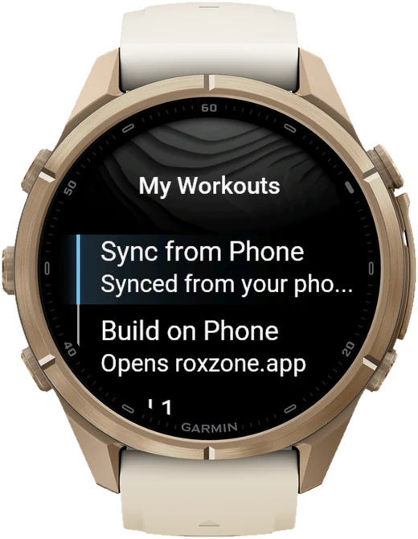
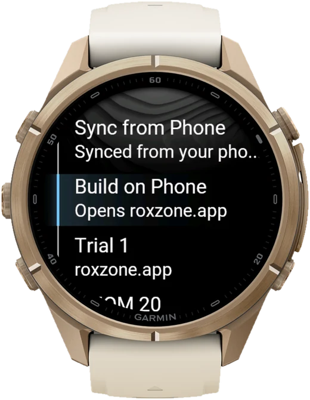
Workouts built on the site sync to the watch; workouts built on the watch stay on the watch. A synced workout is edited, renamed or deleted on the site, and the next sync brings the change across - so on the watch it offers Start only. A workout with new stations, rests or per-segment values cannot be opened in the watch's own builder either; choosing Custom from its setup menu starts a fresh workout and leaves the synced one untouched. Build on Phone in My Workouts opens the builder on your phone.
If the watch shows a message: None found - build one at roxzone.app means the account has no saved workouts yet; Phone not connected means the watch cannot reach the internet, so open Garmin Connect on the phone and try again; This watch is not on your account means the watch was unlocked with a different email - compare About → Watch ID with the watches under Settings on the site; Could not sync - try again is a temporary error.
Building on the Watch
Choose Custom Hyrox from the main menu. Every setting saves automatically, and Continue >> sits at the top of the builder so the usual case is one press away.
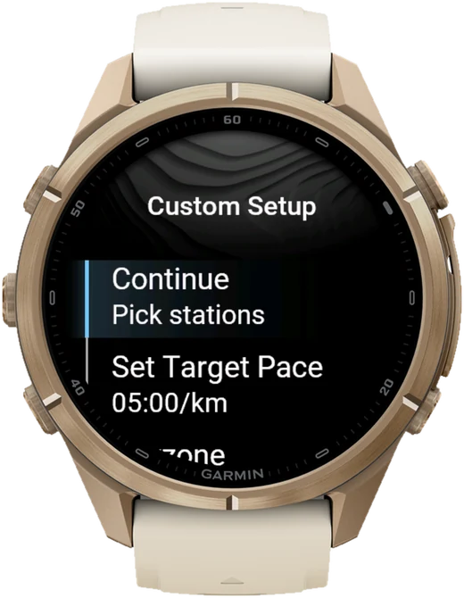
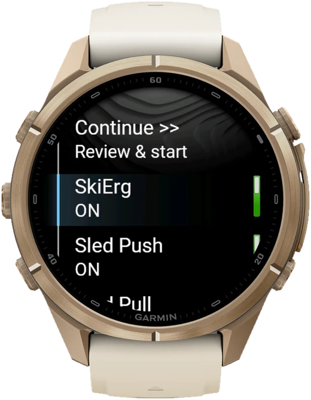
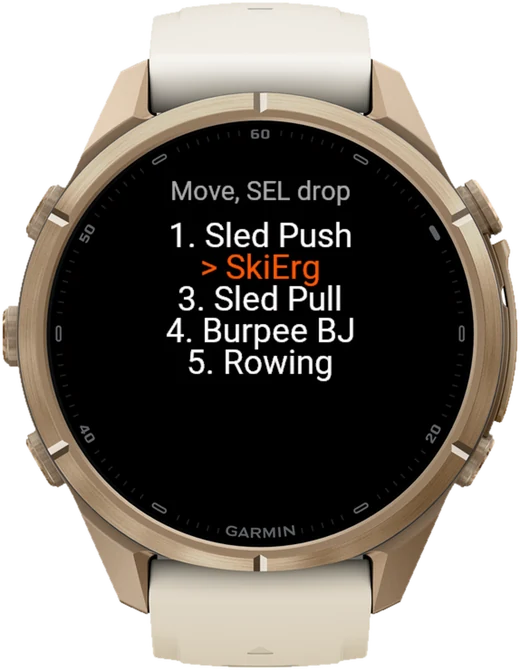
Toggling Stations
On the Custom Hyrox config screen you'll see a list of all 8 HYROX stations. Each has an on/off toggle. Only the stations you enable will appear in your workout - stations that are off are skipped entirely.
This is perfect for targeting specific weaknesses: a SkiErg + Sled Push block, a pure running-and-rowing session, or a Farmers Carry + SB Lunges endurance circuit.
Weights & Categories
Under Weight Category, choose any official race category to load the standard weights for all five weighted stations. Or select Station Weights to enter fully custom values:
- Sled Push and Sled Pull - whole-kg value (e.g. 102 kg). Use the digit picker to scroll each place value independently.
- Farmers Carry, SB Lunges, and Wall Balls - decimal-kg value (e.g. 24.5 kg).
Use the scroll buttons to set each value - the watch guides you through each field and saves automatically when you confirm.
Your custom weights are remembered and restored every time you open Custom Hyrox.
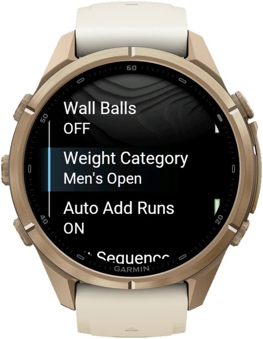
Distances & Reps
Open Station Details to fine-tune volume per station. Each station offers a set of common presets or a Custom option that opens a digit wheel, so you can enter any value you like - 50 m, 70 m, 350 m - as metres for machine and carry stations, and as a rep count for Wall Balls.
Your custom distances and reps are saved alongside your other Custom Hyrox settings.
Run Distance
Tap Run Distance on the config screen to set the length of every run leg in the workout. The same distance applies to all run legs in a session.
For a standard HYROX sim use 1000m. For shorter rep-based sessions, 400m or 600m keeps the run-to-station rhythm intense without accumulating too much running volume.
Edit Sequence & Repeating a Station
Open Edit Sequence on the config screen to arrange your stations in any order. Select a row to open its actions:
- Move - grab the row, scroll it to its new place, press SELECT to drop it.
- Repeat station - add another copy of that station to the sequence. A station can appear as many times as you like - two lunge legs, three sled pushes - and every copy shares that station's weight and distance. Remove this copy takes one copy out again.
- Insert Run Before / Remove Run - available when Auto Add Runs is off, see below.
- Cancel changes - leave the screen with the sequence as it was when you opened it.
The list scrolls automatically as your selection moves, so long sequences are never cut off. Press BACK to keep your changes. Your sequence is saved and remembered for all future Custom Hyrox sessions.
Auto Add Runs
When Auto Add Runs is on (the default), ROXZONE places a run leg before each station, reproducing the standard HYROX format: Run → Station → Run → Station…
When turned off, you switch to free-placement mode. In Edit Sequence you can insert RUN slots anywhere - multiple stations back-to-back, multiple runs in a row, or any other pattern you need. This unlocks circuit formats that go well beyond the standard HYROX structure. Turning Auto Add Runs back on and off again restores the run placement you had built.
Saving Workouts
Your entire Custom Hyrox setup - stations, order, weights, distances, and run distance - is saved automatically and restored exactly as you left it next time. Running a Full or Partial session in between never touches your custom configuration.
To keep more than one custom workout, use Save Workout at the bottom of the builder. The workout is stored in My Workouts under a descriptive name, and you're offered the keyboard straight away if you'd like to name it yourself. Build a lunges block, save it; build a sled day, save it; then start either from My Workouts without rebuilding anything.
Chapter 4
Race Plan
Build a plan for your race on your phone - a goal time split across every run, station and transition - sync it to the watch, and race against it. The watch shows your overall ahead/behind at every moment and gives a verdict on every lap.
Before You Start
- Your watch needs ROXZONE 5.0.1 or newer. On the watch, About in the main menu shows the version.
- Plans are built at roxzone.app/me/plan - sign in with the email you bought ROXZONE with (no password; a code is emailed to you). On your phone it is the Plan tab.
- Plans sync to the watch you unlocked with that email. If you own more than one, the page asks which watch when you save a plan. On the watch, Race Plan → This Watch shows its ID so you can match them up.
- Syncing needs your phone nearby with Garmin Connect running - the watch reaches the internet through it. Once a plan is on the watch it stays there; racing needs no phone at all.
- Plans can be built for the official race, the 25%, 50% and 75% simulations, any custom workout you have built on your phone, and any custom workout you have already run with Online Results on.
Building a Plan
- Press Create a Plan. Choose the workout the plan is for - Official HYROX - full race format, or a 25%, 50% or 75% Simulation. A plan only ever applies to that exact workout.
- Enter your goal finish time (at least 10 minutes) and press Generate plan. You get a draft: every run, station and transition receives a split, and the splits add up to your goal exactly. How the draft decides those numbers is in the next section.
- Make it yours. Every run and station has a slider; drag one and the others rebalance so the total never drifts. Tap the lock beside a split you are sure of - a locked split never moves when you adjust the others. Reset splits returns to the draft; Unlock all frees every lock.
- Roxzone (transitions) is the last slider: one number for all your transition time in the race. Adjust it like any other split - it comes out of the same goal.
- Edit the goal at the top and everything rebalances again, in the same proportions - locked splits stay put.
- Name the plan and press Save plan. It appears under Saved Plans. Open a saved plan to review or edit it: Save changes updates it, Save as new keeps the original and adds a copy - handy for an A-goal and a B-goal for the same race.
When you drag a split, the unlocked splits absorb the difference in proportion to their size. No split can go below 30 seconds, and if every other split is locked or already at the floor, your edit is clamped at the largest value the goal allows - the page tells you when that happens. Lock what you know; leave the rest free.
The watch uses one plan for each workout type. If two saved plans are for the same workout, the most recently edited one carries the Active pill and is the one that syncs. Edit the other one and it becomes active instead.
Race plans target the race format and classic custom workouts. A workout with the new stations, rests or per-segment values (ROXZONE 5.2.0) cannot be given a plan yet; its own values are its targets, and the watch shows no Race Plan or Target Times row for it.
Getting It on the Watch
- Open ROXZONE on the watch and set up the same workout - the official race, or the same simulation - until you reach the Review & Start ladder.
- The watch checks for plans by itself when it opens that screen (at most once every ten minutes, so it never burns battery). When one matches, it applies on its own: the ladder shows a target on every run and station, and the plan's goal time appears on the Race Plan row.
- To sync right now, press MENU on the ladder (or press and hold the screen on two-button watches), then Race Plan → Sync from Phone. The line under Sync from Phone tells you what happened - see Messages on the watch.
- Pressing Build on Phone in the same menu opens the builder on your phone, so you can create a plan from the watch's menu and then come back and sync.
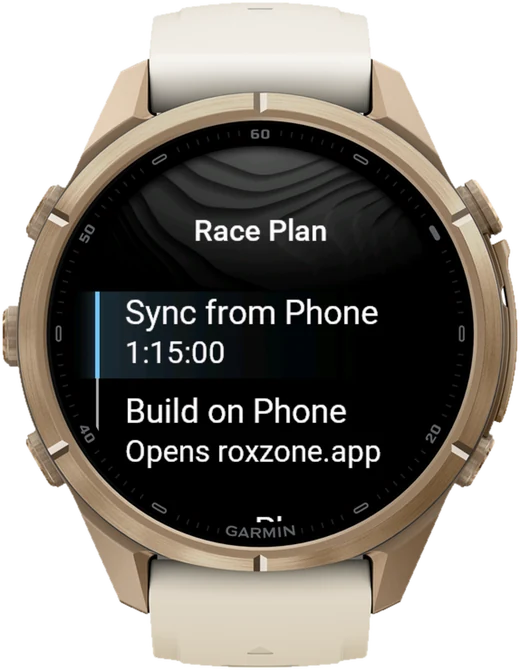
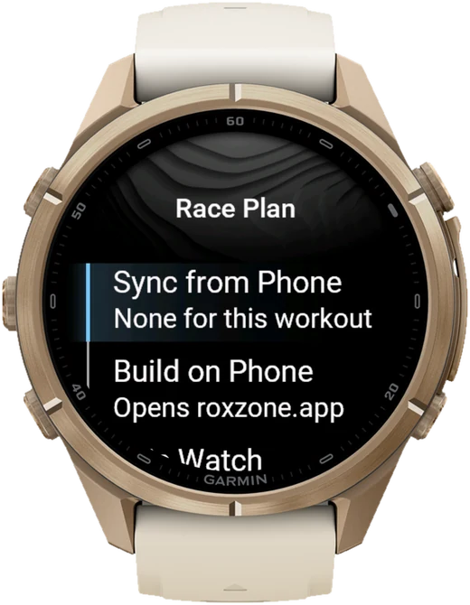
The plan applies only to the workout it was built for - the same format and the same run distance. Built a full-race plan but opened the 50% simulation? The watch says None for this workout.
Setting station targets by hand on the watch for a session takes priority over the plan for that session - the watch assumes an edit made on the spot is what you mean today. Sync from Phone puts the plan back.
During the Race
- Main screen - total time on the left, your live ahead/behind on the right: your overall position against the plan, counting every completed run, station and transition. Grey while within three seconds of the plan, green when ahead, red when behind.
- Every lap - the three-second lap screen carries a strip that reads 0:23 BEHIND, 0:15 AHEAD or ON PLAN, so you get the verdict without looking for it.
- The ring - each run, station and transition fills toward its own target: blue while on budget, orange from 90%, red past it. Transitions get a ring too, because the plan budgets them. With GPS Mode on, outdoor runs keep their pace ring - green on pace, red behind - since pace is the better guide outdoors.
- Simulations repeat until you stop. Each round is judged against the same splits, so "on plan" means on plan for every round.
Changing or Removing a Plan
- Edit the plan on your phone and save. The watch picks up the new version on its next check, or immediately with Sync from Phone.
- Remove Plan in the watch's Race Plan menu takes the plan off that workout and keeps it off - the watch's own checks will not bring it back, so a casual session is never nagged by a three-week-old race plan. It returns when you edit the plan on your phone, or when you press Sync from Phone.
- Removing a plan also clears the targets it wrote onto the ladder; the runs go back to your Run Pace setting and stations go back to no target.
- To delete a plan for good, use the ⋮ menu on its card at roxzone.app and choose Delete. Rename lives in the same menu.
Making the Plan Realistic
- Start from a result, not a wish. Your Activities page shows the splits from every session you have saved online. Take your last full simulation, lock the stations you can already hold, and let the draft distribute the rest.
- Be honest about transitions. Four to five minutes is normal for a full race in a busy venue. Setting the Roxzone slider to one minute does not make you faster; it makes every transition show red.
- Let the runs fade. The draft already slows the later runs. Flattening them to one pace looks tidy and produces a plan you are behind from run 5 onward.
- Build the B plan too. Save as new, rename it, and set a safer goal. On race morning, open the one you want on your phone - editing it makes it the Active plan - and sync.
- Race it in a simulation first. A 50% simulation with a 50% plan tells you in forty minutes whether the splits are honest.
Messages on the Watch
The line under Sync from Phone answers every sync. What each one means:
- 1:20:00 (your goal time) - the plan for this workout is on the watch. The plan's name follows the time when you have more than one plan for the workout.
- No plan yet - the watch has never received a plan. Press Sync from Phone.
- None found - build one on your phone - this account has no saved plans yet.
- None for this workout - you have plans, but none for this workout type and run distance.
- Removed - Sync restores - you removed the plan on the watch. Sync from Phone brings it back.
- Phone not connected - the watch cannot reach the internet. Open Garmin Connect on your phone, check the watch is connected, and try again.
- This watch is not on your account - the watch was unlocked with a different email. Compare Race Plan → This Watch with the watches listed under Settings at roxzone.app.
- Could not sync - try again - a temporary error. Wait a moment and press Sync from Phone again.
How the Draft Is Built
The draft is a starting point shaped like a real race, not an even split. From your goal time:
- 6% is set aside for transitions - the Roxzone slider. For a 1:20:00 goal that is 4:48 across all the moves between run and station. Transitions are real time, and a plan that ignores them is a plan you miss by four minutes.
- The rest is split across runs and stations in typical open-division proportions. The eight runs take roughly half of it, and each run is budgeted a little slower than the last - run 1 is the fastest, run 8 the slowest, about 15-20% apart - because that is how the legs actually go.
- Stations are weighted by how long they typically take. Farmers Carry gets the least, Wall Balls the most (usually more than a run), with Burpee Broad Jumps and Rowing in between.
- Nothing gets less than 30 seconds, and any rounding lands on the largest split, where a second is invisible.
Those proportions are the same for everyone. The point of the sliders is that you know things the draft does not - your sled, your wall balls, your fade in the back half - so change what you know and lock it.
How Ahead/Behind Is Calculated
The number is plain lap arithmetic, so nothing about pace, distance or treadmill sensors can distort it. For every run, station and transition you have completed, the watch takes the time you actually took minus the time the plan gave it, and adds them up. Positive means behind, negative means ahead.
- Transitions - your Roxzone allowance is divided equally across the transitions the watch tracks (see Roxzone toggles). If you race with Roxzone tracking off, the allowance is folded into the runs and stations instead, so the total still adds up to your goal.
- The segment you are in can only make the number worse. While you are inside its budget the number holds still; the moment you pass the budget it climbs second by second. Time you are under budget is credited when you press LAP, not before - the plan will not tell you that you are ahead on a station you have not finished.
- Pauses do not count. Paused time is taken out of the segment it happened in, including transitions.
- Undo last lap rewinds the calculation along with the lap.
Plan: Run 1 at 4:30, SkiErg at 4:00. You run 4:20 - press LAP and the strip says 0:10 AHEAD. On the SkiErg you pass 4:00 still rowing; the main screen has been at -0:10 (green) and now starts climbing: -0:09, -0:08... You finish at 4:25, and the strip says 0:15 BEHIND: ten seconds gained, twenty-five lost. The transition in between is measured against its own share of your Roxzone allowance in exactly the same way.
Questions
Do I need my phone during the race? No. The plan is stored on the watch once synced. The phone is only needed to build and to sync.
Can I plan a custom workout? Yes. A workout built on your phone appears in the New plan list by name, and its Plan targets link opens the builder with it selected. A custom workout built on the watch appears once you have run it with Online Results on, since that is how the site learns its shape.
I set station targets by hand and the plan disappeared. By design: a target set on the watch wins for that session. Sync from Phone restores the plan.
I have two plans for the full race. Which one syncs? The one edited most recently - it carries the Active pill on the page. To switch, open the other one and save it.
The ring turned orange but the number still says ahead. The ring is about this segment (you are at 90% of its budget); the number is about the whole race so far. Both are true.
I changed my goal on the page. Does the watch know? On its next check, or straight away with Sync from Phone. The ladder shows the new targets when it does.
Will a full-race plan work for a 75% simulation? No - the run distances differ, so the watch says None for this workout. Build a 75% plan; it takes a minute.
If something looks wrong - a split that does not add up, a delta that does not match your laps - email hello@roxzone.app with your watch model and what you expected to see. It goes straight to the developer.
Part 2
Train on your watch
Everything on the wrist: choosing a workout, the settings that shape it, every screen you see while racing, and what happens when you finish.
How a session runs
Your first workout
-
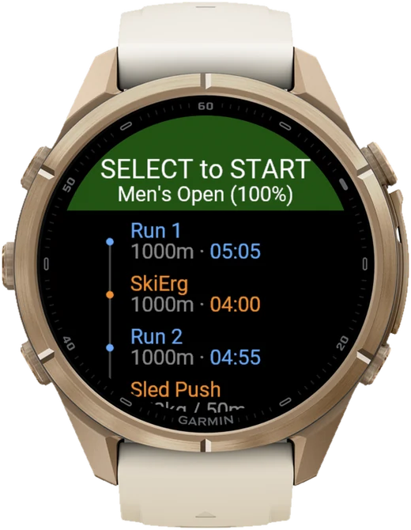
01Review & Start
Every run, station and target in order. Press SELECT to begin.
-

02Warm up
Not part of your race time. Press LAP when you are ready and the race clock starts.
-
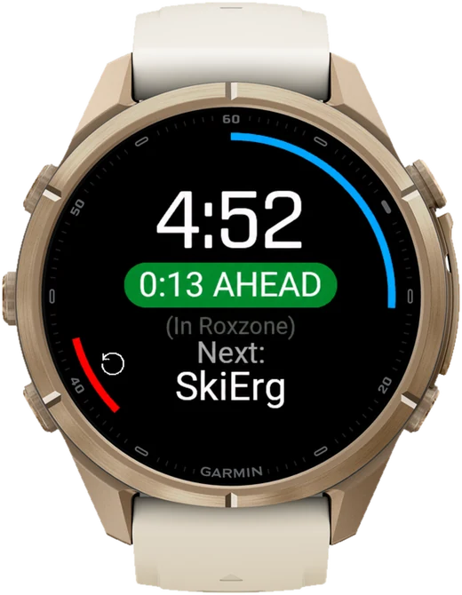
03Lap at the arches
Each Lap press shows the split, and with a plan, whether you are ahead.
-
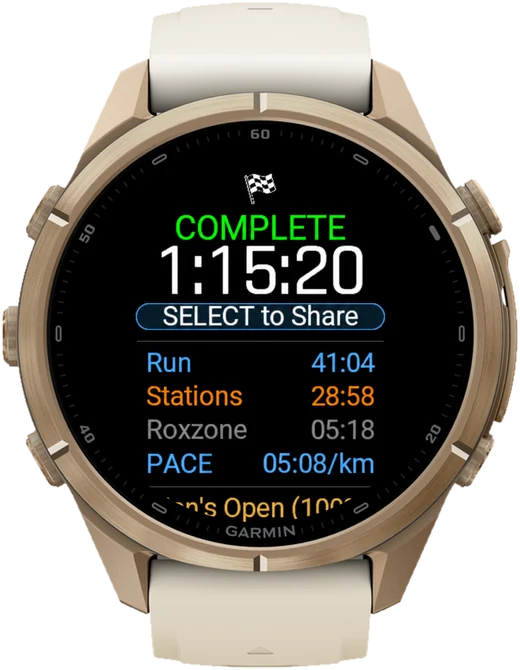
04Finish
Total, run, station and Roxzone time with pace. BACK saves, SELECT shares.
Chapter 5
Setting Up
Every time you open ROXZONE you're greeted with the main menu. Three modes cover everything from official race-day tracking to bespoke sessions, a Start row at the top relaunches your last workout, and the settings below shape how each session is tracked.
On the watch
Setting up a workout
-
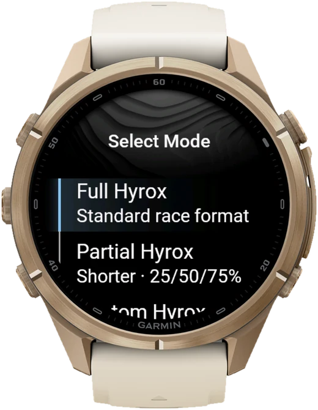
01Choose a mode
Full, Partial or Custom Hyrox.
-
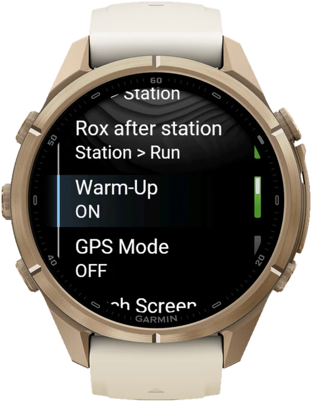
02Adjust settings
Roxzone, Warm-Up, GPS and more, one toggle each.
-
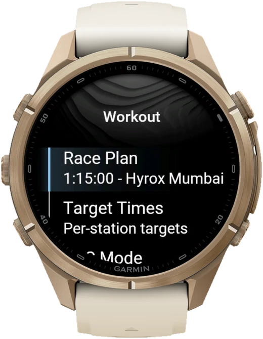
03Workout menu
MENU on Review & Start: Race Plan and Target Times.
-

04Before you go
Switch on GPS, choose what runs show, or save it to My Workouts.
Full Hyrox
The complete official HYROX race format: 8 run legs followed by 8 functional fitness stations in the standard race order. Choose your race category, dial in your target run pace, configure your ROXZONE and GPS settings, then go.
Supported race categories with official station weights pre-loaded:
- Men's Open / Women's Open
- Men's Pro / Women's Pro
- Men's Doubles / Women's Doubles
- Men's Pro Doubles / Women's Pro Doubles
- Mixed Doubles
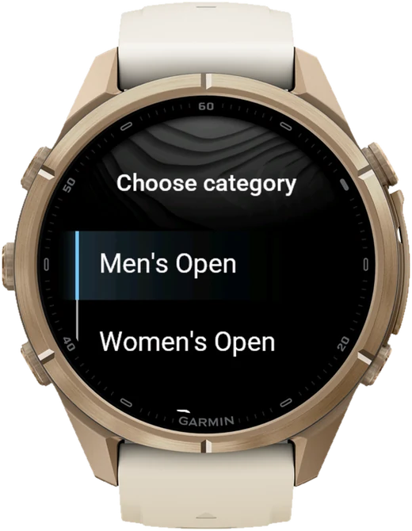
Full Hyrox gives you the most granular ROXZONE configuration - separate toggles for the run-to-station and station-to-run transitions. See ROXZONE Toggles below for the full breakdown.
Partial Hyrox (Simulate)
A scaled race simulation designed for high-quality training sessions when you don't have the time or recovery budget for the full event. Pick your race category and then select your volume fraction:
- Quarter (25%) - a sharp, fast session ideal for race-pace sharpening or a speed-focused day.
- Half (50%) - the most popular training format; captures the race rhythm without the full fatigue cost.
- Three-quarter (75%) - close to full race stress; great for late-block race simulation or building mental toughness.
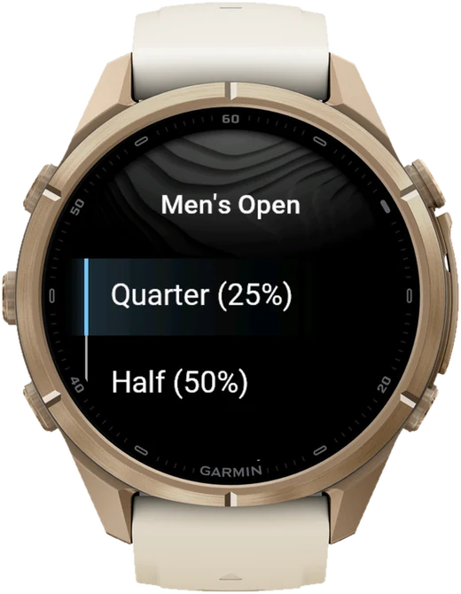
ROXZONE automatically scales both run distance and station volume to match the selected percentage. Station weights remain at the full category standard - only the volume is reduced.
Custom Hyrox
Total freedom. Choose which of the 8 stations to include, set custom weights and distances or rep counts per station, reorder the sequence, control run placement, and set the run distance. Everything you configure is saved automatically and reloaded next session.
You can build one here on the watch, or on your phone with more stations, per-segment values and rests. Both are covered in Build Workouts.
Start Row & My Workouts
The first row of the main menu is Start, followed by a one-line description of your last workout - for example Men's Open (100%) or Custom - 6 st - 800m. Select it to jump straight to the Review & Start screen with every setting exactly as you left it. No re-entering the category, pace, or station list.
My Workouts is your saved library on the watch. Any workout you save - from the Custom Hyrox builder, or from the Review & Start screen in any mode - appears here, most recently used first. Select a saved workout to start it, or open its row actions to Rename or Delete it.
- Up to 8 workouts are kept. Saving a ninth removes the one you haven't used for longest.
- Workouts are saved with a descriptive name and you can type your own on watches with a keyboard (Lunges block, Race sim). Button-only watches use the character scroller - keep names short.
- A saved workout remembers everything: mode, category, stations, order, weights, distances, run distance, and any station targets.
Run Pace
Set your expected pace per kilometre for every run leg in the session. ROXZONE uses this as your personal benchmark on every run - it powers all of your live pacing cues, from the bezel arc to the run data readouts, so a single glance tells you whether you're on track to hit your split. During any run segment, press Down to bring up that screen.
Rather run without a target? Pick No target at the top of the list. Runs then show progress only, never green or red, and a Race Plan still sets its own targets.
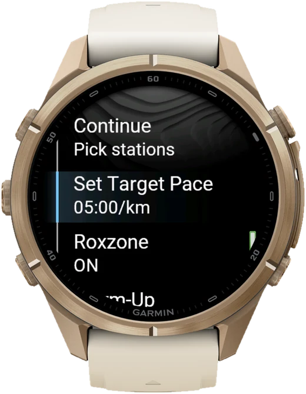

ROXZONE Toggles - Tracking Your Transitions
The ROXZONE is the transition area between the running track and the functional fitness stations - the buffer of time between the moment you stop running and the moment you start a station (and vice versa). Whether or not you track it separately is one of the most impactful data decisions you can make as a HYROX athlete.
In a real race, a careless transition can cost you 10-30 seconds per station. Over 8 stations, that's several minutes quietly leaking out of your finish time with nothing to show for it in your splits. The Roxzone toggles let you see exactly where that time goes - and whether you're improving it.
Full Hyrox - Two Independent Toggles
In Full Hyrox mode, you get separate control over each direction of transition:
Run → Station Rox Before
Captures the time between finishing your run leg and beginning your station work. This is your entry transition - the seconds it takes to exit the running track, reach the equipment, and get into position.
Station → Run Rox After
Captures the time between completing your station and starting the next run. This is your exit transition - the moments spent recovering from the station effort, repositioning, and getting back into running stride.
When either toggle is on, pressing Lap at the relevant moment starts a dedicated Roxzone split - the display shifts so you always know you're in transition time, not run or station time. Press Lap again to end the transition and begin the next segment.
When a toggle is off, transition time merges into the adjacent lap. Simpler, but you lose the granularity to see exactly where time is going.
Which combination should I use?
The choice comes down to how granular you want your post-workout data:
- Both ON (recommended for race analysis) - maximum resolution. You get pure run time, pure station time, and both transition splits as separate laps in Garmin Connect. Ideal when you're seriously analysing your race pacing or trying to quantify transition efficiency.
- Rox Before only - useful if your entry to stations is a known weak point (e.g. you tend to jog slowly into the Sled Push zone). Your station times stay clean; only the entry buffer is isolated.
- Rox After only - isolates your exit and recovery transition. Good for athletes who suspect they're over-resting before getting back to running.
- Both OFF - simplified, no transition tracking. Your run laps include the time from leaving the previous station to starting the next station. Best for athletes who want clean, high-level data without additional Lap presses during transitions.
Partial Hyrox and Custom Hyrox use a single Roxzone toggle that covers both directions simultaneously. You can't split them independently in these modes.
GPS Mode (Outdoor)
GPS Mode activates your watch's satellite positioning for outdoor runs. With it on, ROXZONE tracks your actual distance per run leg and gives you a haptic buzz when you've hit your target - your cue to press Lap. The run data screen shows live distance and pace, colour-coded against your target.
GPS Mode always defaults to off - enable it only when heading outside. If GPS Mode is on, keep Warm-Up enabled too so the watch gets a signal fix before your first run.
Indoor Run Pace & Distance
Running indoors? ROXZONE gives you live pace and distance even without GPS - ideal for indoor tracks, treadmills, and gym-based HYROX simulations. The estimate gets sharper over time: each completed run leg refines the accuracy, and your watch remembers the improvement across future workouts.
Indoors, the bezel arc becomes a steady pacing companion: it advances at your goal pace so you always know whether you're keeping up with your target split. As you close in on the finish it warms to amber - your heads-up that it's time to start wrapping the leg up: begin steering toward the station entrance rather than committing to another full loop of the track. It then turns red the moment you reach your target, your cue to drive through the line and press Lap into the next station. You'll still feel a haptic buzz as you cover the leg, and your live distance and pace stay on the run data screen throughout.
Warm-Up
When Warm-Up is enabled (the default), ROXZONE opens a dedicated warm-up timer screen before your race or session begins. Your warm-up time is saved as a separate lap in Garmin Connect so it never inflates your actual workout time or splits.
Press LAP to end the warm-up and start the race, the same button that moves you on all session. START pauses the warm-up and opens a short menu: Start begins the race, Resume carries on warming up, and Discard leaves the warm-up and takes you back to Review & Start. To start your session without a warm-up phase at all, turn the toggle off - the workout begins immediately.
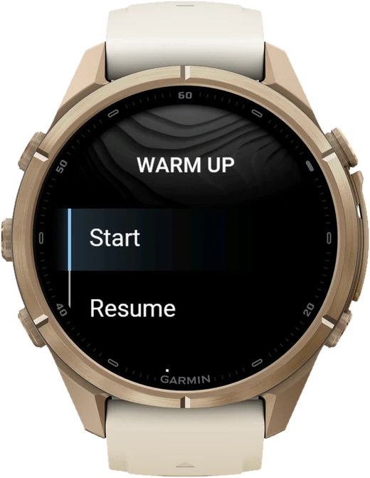
If you have GPS Mode on, keep Warm-Up enabled - it gives the GPS time to acquire a strong fix before your first run leg, which meaningfully improves early distance accuracy.
Run Screen
Choose what the main screen shows while you run. Pace + time is the default: your live pace on the left, the run's time on the right.
- Pace + time - live pace per km and the time on this run.
- Pace + distance - live pace and the distance covered on this run.
- Distance + time - distance covered and the time on this run.
- Time - the run's time as one big number.
Set it with Run screen in the workout settings, or on Review & Start: press MENU (press and hold the screen on two-button watches) and pick Run screen. It is one setting for every workout, indoors and out, and stations and Roxzones keep their usual screen.
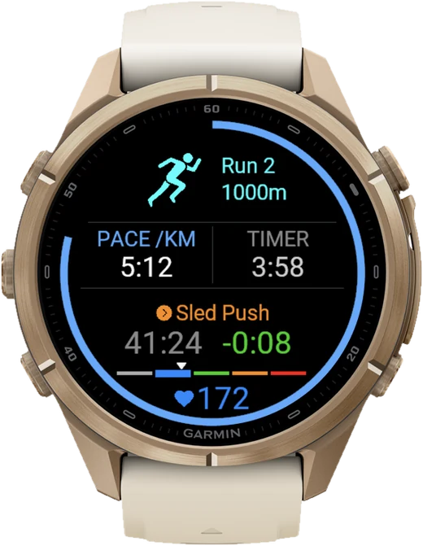
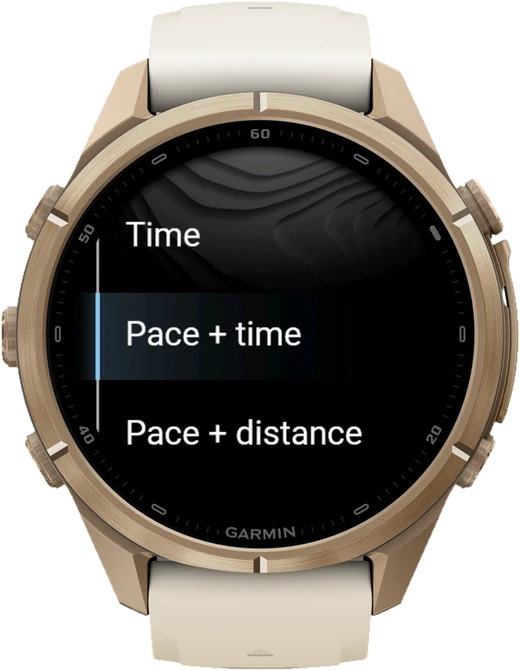
Touchscreen Lock
On touchscreen-capable Garmin watches, the Touchscreen toggle controls whether the display responds to touch during your session. Turning it off prevents accidental taps - particularly useful during Sled Push, Rowing, and other stations where your hands contact the watch face.
Physical buttons continue to work regardless of this setting, so you can still press Lap, open the menu, and navigate screens with full control.
Watch locking itself while a workout records, or asking you to unlock before every Lap? That is Garmin's own Touch Lock, not this toggle. See Watch Locks During a Workout.
Review & Start
The Review & Start screen is the last stop before every session: a scrollable ladder of the whole workout in order - every run, Roxzone, and station, with weights, distances, and any station targets you've set. Scroll with UP/DOWN or by swiping to check the full sequence.
Press SELECT to begin. Tapping the screen deliberately does nothing here, so a stray touch can never start a recording. Press BACK to return to the settings.
Press MENU on this screen to open the Workout menu:
- Race Plan - shows the plan this workout will follow, if you have one. See Race Plan.
- Target Times - set per-station targets, explained in Station Targets below.
- GPS Mode - switch GPS on for an outdoor session, including workouts started from My Workouts.
- Save to My Workouts - keeps this exact workout in My Workouts.
On watches with only two buttons (for example vívoactive 6 and Venu 4) press and hold the screen on the Review & Start ladder to open the same Workout menu. On vívoactive 5 / Venu 3 you can also hold the lower (BACK) button - that is Garmin's MENU shortcut on those models.
Station Targets
Alongside your run pace you can give each station its own target time. Open the Review & Start screen, press MENU (or press and hold the screen on two-button watches), then choose Target Times.
- Pick a station and dial in a time on the M:SS wheel. Set it to 0:00 to clear the target again.
- Set All Runs gives every run leg the same target time (it starts from your Run Pace).
- Set All Stations applies one time to every station at once - handy for a "sub-4 everything" session; fine-tune individual stations afterwards.
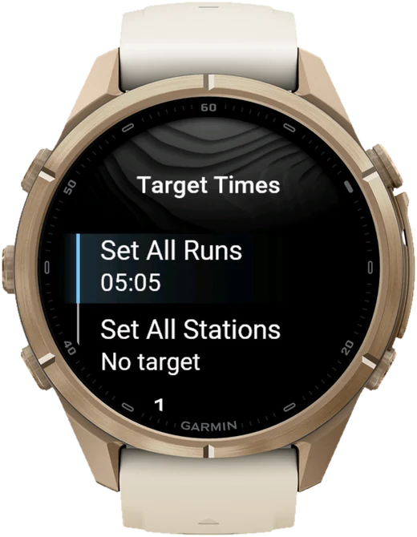
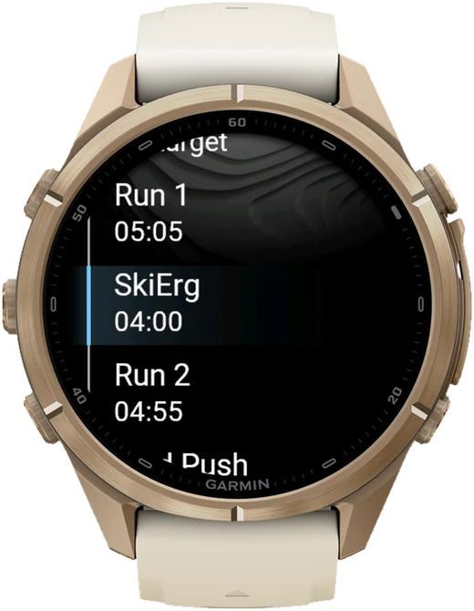
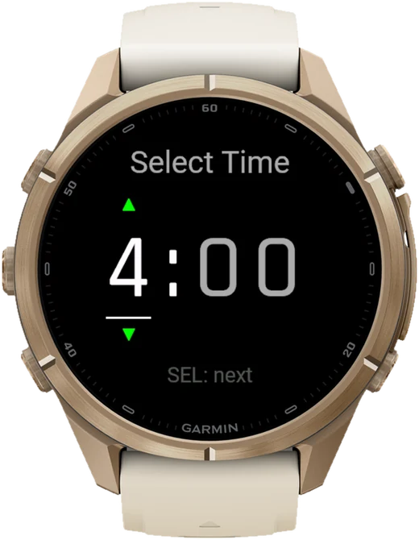
Targets show on the ladder next to each station (Sled Push · 3:30), and during the workout a station with a target gets the same treatment as a run: the bezel ring fills towards the target, and the main screen shows live ahead / behind so you know whether to push or hold. Stations without a target simply show the elapsed timer as before.
Press Down during a station with a target for its numbers: Lap is the time so far, Delta the time left before you pass the target (it turns red once you do), and Cum D how far ahead or behind you are across every finished segment with a target.
Targets are saved with the workout, so they come back with the Start row and with anything you keep in My Workouts.
For a target on every run, station and transition at once - a whole race split from one goal time, built on your phone - see Race Plan.
Chapter 6
During the Workout
Once your session is running, ROXZONE stays out of your way and keeps your most important data front and centre. Here's how to interact with it at full sprint.
On your wrist
Workout screens
-
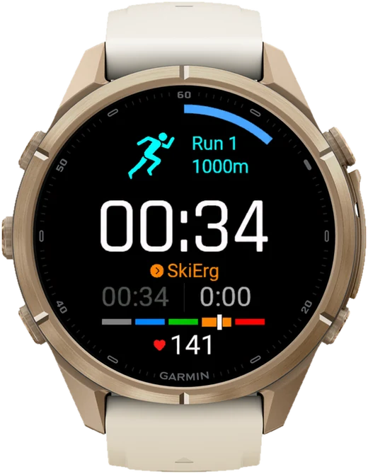
Run
Segment time, total, ahead or behind, heart rate and what is next.
-
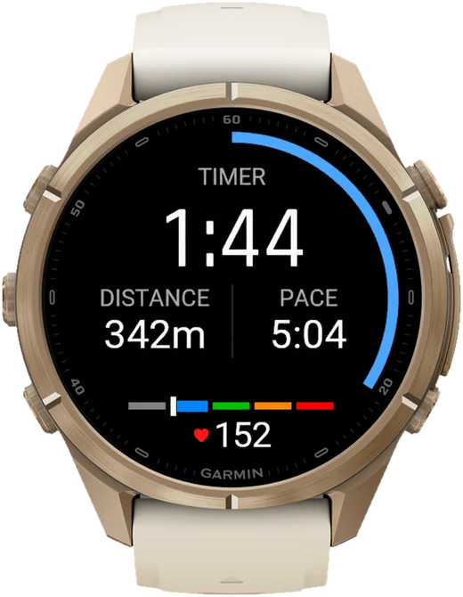
Run data
Press Down on a run for timer, distance and pace.
-
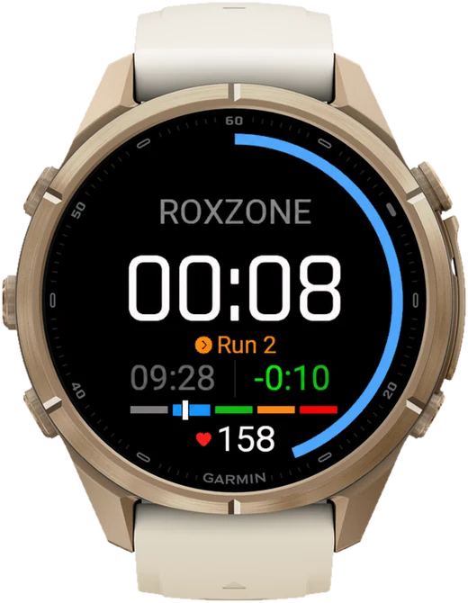
Roxzone
Transition time, kept apart from your runs and stations.
-
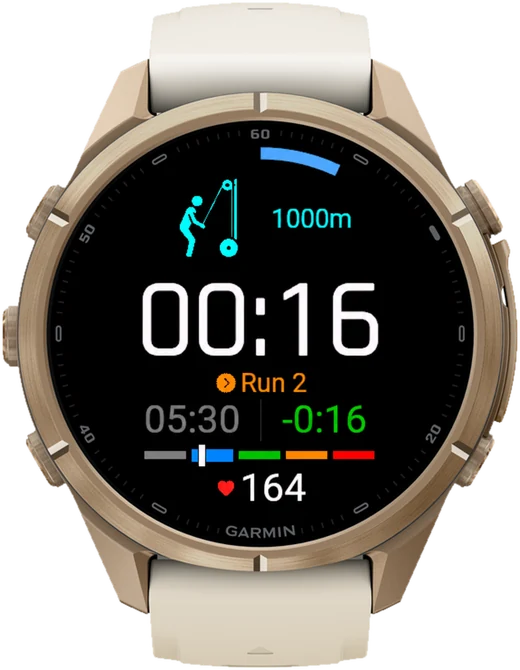
Station
The ring fills toward your station target.
-
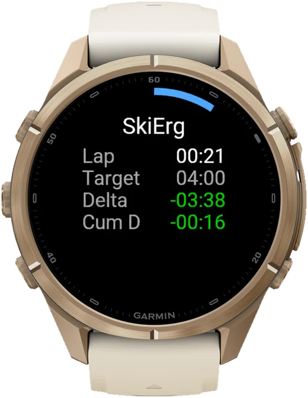
Station numbers
Press Down on a station with a target: Lap, Target, Delta, Cum D.
-
Paused
Resume, undo the last lap, or finish with Save Workout.
Advancing Between Segments
Press the Lap button to move from one segment to the next. Each press locks in a clean split - your run time, station time, and any Roxzone transition time are all recorded separately in Garmin Connect.
Segments set in time (a 1:00 run, a 0:40 station or a Rest row, built on the site) move on by themselves: the watch buzzes three times at the end and starts the next segment. Lap still works there, it just ends the segment early.
With Roxzone toggles on, you'll press Lap at each transition boundary - entering and exiting the Roxzone area. With toggles off, a single Lap press moves you directly from run to station and back, keeping the rhythm simpler. Exactly where to press is in When to Press Lap.
When to Press Lap
Press Lap at the arches.
That is where your chip is read, so your splits match your race results.
Timed segments are the one exception: they end on their own, and a Rest row counts down and moves on without a press.
| Roxzone setting | Press Lap at |
|---|---|
| Both on | 1234 |
| Rox before only | 123 |
| Rox after only | 234 |
| Both off | 23 |
- Start: on the start line, press LAP on the warm-up screen, or SELECT on Review & Start with Warm-Up off.
- Finish: press Lap after your last Wall Ball. With Rox after on in Full Hyrox, press once more at the finish line.
- Partial and Custom Hyrox have one Roxzone switch: on is 4 presses, off is 2.
- Training? Use the same four spots every session.
- Wrong press? Undo it from the lap screen or the pause menu.
Main Workout Screen
The primary screen shows everything you need to stay on target during the heat of a session:
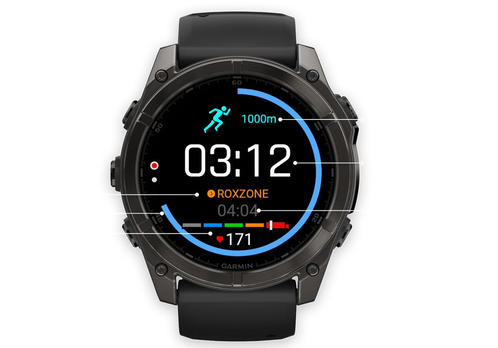
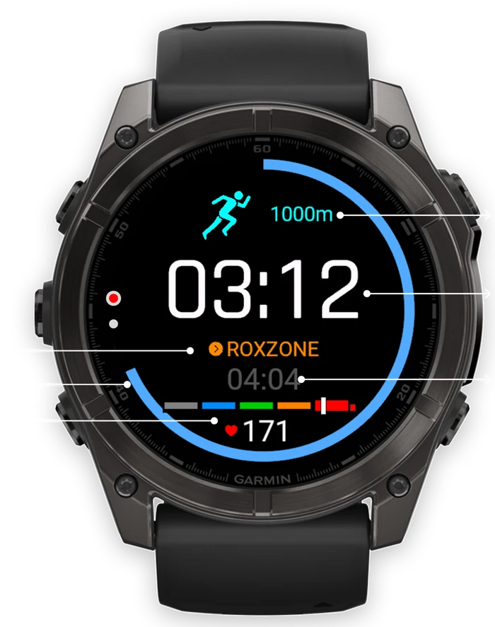
- Current station
- Timer (Current station)
- Next station
- Timer (Overall)
- Target progress
- Live HR & Zone
- Current segment name and station icon - always know exactly where you are in the workout.
- Segment time - how long you've been in the current station or Roxzone transition. On runs, live pace and the run's time sit side by side (see Run Screen).
- Total workout time - full elapsed time from the moment the workout started, with your ahead or behind beside it when a Race Plan is set.
- Heart rate with a colour-coded zone bar - the heart and the number take your current zone's colour, so you can read your aerobic load at a glance, especially through stations.
- Bezel pacing arc - your at-a-glance run companion. Outdoors it follows your real distance and glows green when you're ahead of target pace, red when you've slipped behind. Indoors it advances steadily at your goal pace, warming to amber as you near your target split - your cue to start wrapping up and steer toward the station entrance rather than starting another loop - then turning red as you reach it. The arc is dedicated to your runs, keeping your station and transition screens clean and distraction-free.
- Next segment indicator - a preview of what's coming up so you can mentally prepare for the transition.
During Roxzone transitions, the display shifts to a distinct neutral tone - a clear visual signal that you're in transition time, separate from both your run and station clocks.
Run Data Screen
A second data screen is available during every run segment - whether GPS Mode is on or off. Swipe left or press Down to bring it up. It shows:
- Segment timer - elapsed time for the current run leg.
- Distance covered - how far you've run in this leg.
- Live pace - outdoors it's colour-coded green when you're on or ahead of target and red when you've fallen behind. Indoors your pace stays clean and uncoloured, with the bezel arc carrying your pacing cue instead.
This screen is only available during run segments.
Power Screen
During runs, a power screen shows Garmin's own running power, which many newer Garmin watches measure from the wrist with no accessory. A Stryd or other foot pod doesn't bring it up: Garmin passes their power only to their own data fields, not to apps like ROXZONE.
It shows up once the first power reading arrives, usually within a few seconds of your first run, and stays available for the rest of the workout. Press Up from the main screen to jump straight to it, or keep pressing Down.
The power screen shows:
- Live running power in watts.
- Heart rate with the same colour-coded zone bar as the main screen.
If your watch reports no running power, this screen does not appear.
Undo Last Lap
Pressed Lap too early? After every Lap press a brief confirmation screen appears - use it to undo immediately and pick up exactly where you left off. You can also access Undo Last Lap from the pause menu at any time. Undo covers the most recent Lap press only.
Pausing & Resuming
Access the in-workout pause menu via long-press or the menu button. While paused, your segment timer is frozen - pause time is never counted in your splits. Resume when ready to continue from exactly where you left off.
At the end of the workout, choose Save Workout in that menu. The activity syncs to Garmin Connect the next time your watch connects to your phone.
Chapter 7
After the Workout
Your session saves to Garmin Connect as a fully structured activity - lap by lap, segment by segment.
Summary Screen
Immediately after finishing a workout, ROXZONE shows a full-screen summary. Scroll up and down to navigate it - the content is laid out in two sections:
- Top section - total time (large), with Run, Stations, ROXZONE, and average run pace broken out beneath it, followed by your weight category and simulation percentage.
- Splits section - every individual segment in order: each run and station labelled by name, with Roxzone transition rows interleaved. Rest rows from a site-built workout sit in grey, and a Rest total joins the top section when a workout had any. Scroll down past the category line to reach the splits.
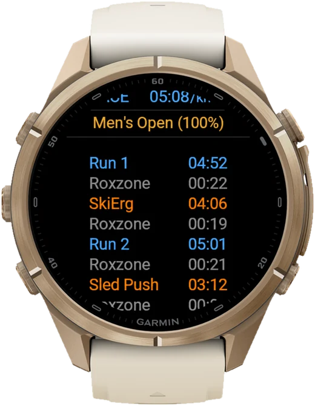
The scroll arrows fade after a few seconds of inactivity and reappear when you scroll again.
Press BACK to save the activity to Garmin Connect and exit. Press SELECT to share the result to your phone (see below).
Garmin Connect Sync
Once saved, the workout automatically syncs to Garmin Connect the next time your watch connects to your phone via Bluetooth or Wi-Fi. The activity is recorded as a Run activity named HYROX - appearing as Outdoor Run when GPS Mode was on, or Indoor Run for GPS-off sessions.
Heart rate, GPS track (if GPS Mode was on), elapsed time, and lap-level data are all captured and visible in the full activity view.
Reading Your Splits
Open the activity in Garmin Connect and scroll to the Laps section. Each segment - every run, every station, every Roxzone transition - is its own lap, clearly labelled by name, so there's no ambiguity about what each row represents.
This lap-level granularity is the core data model that makes ROXZONE useful for training analysis. Over multiple sessions you can track:
- Splits improving or degrading across equivalent runs (Run 1 vs Run 5 vs Run 8)
- Station-to-station consistency within a session
- Roxzone transition times trending down as your race efficiency improves
- Whether your target pace held up across the full event
Workout History
ROXZONE stores your last 20 workouts on the watch itself. To browse them, go back to the main setup menu and select History (appears once you have at least one saved workout).
Each entry shows the date, workout type, and total time. Tap any entry to open the full summary screen for that session - the same view you saw immediately after finishing, with all splits and totals. Press SELECT from a history summary to share that result to your phone. Press BACK to return to the history list.
Use Clear History at the bottom of the history list to remove all saved entries.
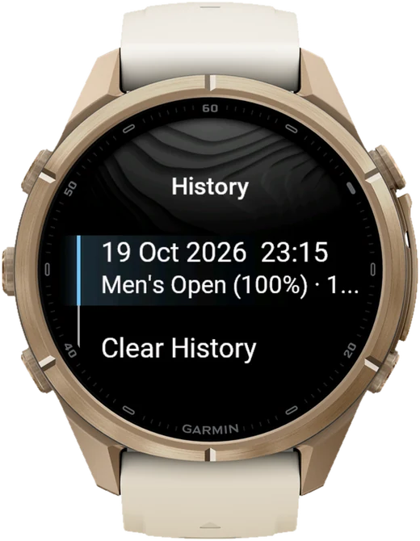
Strava Sync
If your Garmin Connect account is linked to Strava, the ROXZONE activity will appear there automatically after syncing to Garmin Connect. Lap-level data is visible in Strava's segment breakdown for athletes who also track their training there.
Part 3
Review on your phone
Every finished workout lands on roxzone.app: your results with full splits, your training over time, and a profile to share.
Chapter 8
Results & Profile
Turn on Online Results once and every workout you finish is saved to your account, ready to open, share and compare.
Online Results
Off by default. Your watch stores your 20 most recent workouts and silently drops the oldest once it is full - train three times a week and you lose a workout roughly every seven weeks. Online Results is how you keep them.
With it on, every workout you finish is saved to roxzone.app by itself and gets a short link you can open or send at any time. Sharing gets quicker too: the result is already online, so pressing SELECT opens it immediately instead of building a long link.
What is saved: your splits, times, station settings and average heart rate per segment. What is never saved: your name, email address or location. Shared pages show only the workout - they cannot be used to find out who recorded it, or to browse anyone else's results.
The first time you share a result the watch asks once, in plain words, whether to turn this on. Answering no changes nothing about how the app works: sharing still opens your result on your phone exactly as before, with the whole workout encoded in the link and nothing stored on our servers.
A saved workout is a data point. Once you have a season of them, ROXZONE can start answering the questions a single result never can: is my run pace holding up across the eight legs, which station is costing me the most, how does today's sim compare with the same session six weeks ago, and is my Roxzone time actually coming down. Those features are what is being built next, and they can only work on results that were kept. Turning this on now means the history is already there when they arrive - nothing is backfilled from a watch that has moved on.
Change your mind whenever you like from the Online Results toggle at the bottom of the main menu (before 5.2.3 it sat in the workout settings list, alongside Warm-Up and GPS Mode). Turning it on asks the same question again so you always know what you are agreeing to; turning it off stops uploads immediately. Results already saved stay until you delete them, which you can do yourself under Settings at roxzone.app. Full detail is in the privacy policy.
Activities
Every workout saved with Online Results, newest first, each with the date and time, your total, and how it split between running, stations and Roxzone. Open one for the full page of splits. You also get here from the See all your results link at the bottom of any result you have shared.
The ⋮ menu on each activity can Share it, Rename it, Hide from profile so it stays private to you, or Delete it. Own more than one watch and a row of buttons filters the list down to whichever you want.
Results only appear from the moment Online Results is switched on, and that setting arrived in version 4.8.4 - on an older build it is not in the menu to find. Update ROXZONE from the Connect IQ store, turn on Online Results at the bottom of the main menu, and your next finished workout will be waiting here. Earlier workouts still on your watch can be added too: open one from History and press SELECT to share it.
Home
Home is your training at a glance, built from the workouts in Activities:
- Training - this week's training time and days against last week, the last 12 weeks split into run, station and Roxzone time, and a month calendar of the days you trained. The arrows step back through earlier months.
- Run pace - your pace across your last five runs.
- Personal bests - your best times for the race and its simulations.
- Latest activity - your most recent workout, one tap from its splits.
Hover or tap a bar in a chart for its numbers.
Your Profile
Your profile is your athlete page at roxzone.app/u/ followed by your handle. Open the Profile tab and claim a @handle first - letters, numbers and underscores, changeable once a month. Then fill in as much as you like:
- Photo and cover - drag and zoom to position each one.
- Name, bio and country.
- Next race - its date shows as a countdown.
- Goal time - your goal finish time. Race Plan starts from it.
Your page shows your races with personal bests marked, your best times and station splits, how consistently you train, and your recent sessions. Your race category comes from your latest race, so there is nothing to set.
Public or private. A profile starts private, visible only to you. Turn on Public profile and anyone with the link can open it; the first time, you choose whether your past results show too or only new ones. Share links to single results work either way. Show heart rate decides whether visitors see your heart rate; off, only you do. To keep one session off a public page, use Hide from profile in Activities.
Settings, Export & Deleting
Settings is in the menu at the top of roxzone.app.
- Your watches - give each watch a name, such as My fenix or Sarah's Venu, so a shared household can tell whose session is whose. With more than one, you can hide a watch you no longer train with; that only tidies the lists, and nothing is deleted.
- Export my data - everything we hold for your account, as a file.
- Delete my results - erases every stored workout for your watches, and your profile page and photo with them. It cannot be undone. Your licence keeps working.
Chapter 9
Help & Troubleshooting
Most issues resolve quickly. Find yours below, and if it is not here, email me.
Moving Your Licence
From v4.7 your claim code is tied to the watch, so reinstalling the app brings the same code back and the licence simply keeps working. One licence unlocks one watch. If your app predates v4.7, or you have a new watch, it shows a new code, and we move your existing purchase to it by email, with no repayment.
- Open ROXZONE on the watch. Note the claim code displayed on the locked screen.
- Email hello@roxzone.app with that code and the exact email address used for your original purchase.
- We move the license to the new code, usually the same day.
- Open ROXZONE on your watch with your phone nearby. It picks up the license by itself within a few seconds.
App Is Still Locked After Payment
- Make sure your watch is paired with the Garmin Connect app on your phone and that your phone has an active internet connection. The watch needs that link to collect your license.
- Leave the unlock screen open for about 15 seconds. The app re-checks on its own while that screen is showing.
- If it's still locked, close and reopen ROXZONE. On app versions before 4.5.3 the check isn't automatic - scroll down on the locked screen and tap Refresh License.
- If the issue persists after a few minutes, contact us with your claim code and the email used for payment - we'll sort it manually within hours.
"Check Connection" Message
This message appears when the watch can't reach the ROXZONE license server - usually a temporary network issue rather than a license problem. Ensure your watch is paired with your phone and your phone has internet; the app retries by itself, or you can tap Refresh License to check immediately.
If you're already licensed, the app stays fully unlocked and usable. Once connectivity is restored, everything re-verifies automatically.
Watch Locks During a Workout
Many newer Garmin watches have a setting called Touch Lock, separate from the toggle above. It locks the screen (on some models and the buttons) while a workout records, so a padlock appears and you have to hold a button or swipe down from the top to unlock. Garmin does not let apps switch it off, so ROXZONE cannot. Turn it off on the watch instead.
On newer watches such as the vívoactive 6, Forerunner 170 and 970, and Venu 4, Touch Lock is set in more than one place, so turning it off in one menu may not be enough. Check both:
- Settings → Display & Brightness → Touch Lock: locks the screen every time it turns off.
- Settings → Focus Modes → Activity: the Activity focus mode switches on whenever any workout is recording and has its own display settings, including Touch Lock.
vívoactive 6: from the watch face press the top button, then Settings → Display & Brightness → Touch Lock → Off.
Forerunner 170: hold the middle left button, then Settings → Focus Modes → Activity → Touch Lock → Off.
The Touch Lock inside a Garmin activity's own settings only affects Garmin's built-in activities, so changing it there does not help in ROXZONE.
Buttons locked rather than the screen? Watches such as the Epix (Gen 2) also have Auto Lock under Settings → System → Auto Lock. Set to During Activity, it locks the buttons and touchscreen while any workout records; change it so it does not lock during activities.
After that, Lap works straight away, with no unlocking.
App Crash or Error
- Close and reopen the app - most one-off crashes clear on relaunch.
- If the crash is repeatable, reinstall ROXZONE from Connect IQ. Open it with your phone nearby and it unlocks itself; if the code has changed, email hello@roxzone.app and we move the license.
- If a specific watch model or scenario reliably triggers the crash, send us a message with your watch model and the steps to reproduce - we investigate promptly.
Custom Setup Wasn't Saved
Your setup saves when you exit the config screen via Continue or Back. If you close the app mid-setup without doing either, your latest changes may not have been saved - always exit cleanly.
Contact the Developer
For support requests, license issues, bug reports, or feature suggestions, drop a note at:
Replies typically arrive within hours, occasionally within a day or two during busy weeks. To help me investigate quickly, please include:
- Your watch model (e.g. Fenix 8 47mm, Forerunner 965)
- Your claim code if the issue is licensing-related
- A short description of what you expected to happen vs. what actually happened
Enjoying the App? Leave a Review
Reviews keep this app alive
ROXZONE is the work of one independent developer with no marketing budget. If the app has helped your training or your race, a star rating on Garmin Connect IQ is the single biggest thing you can do to support continued development - it helps other HYROX athletes discover it, and it keeps me motivated to ship new features.
Leave a Review on Garmin Connect IQ →